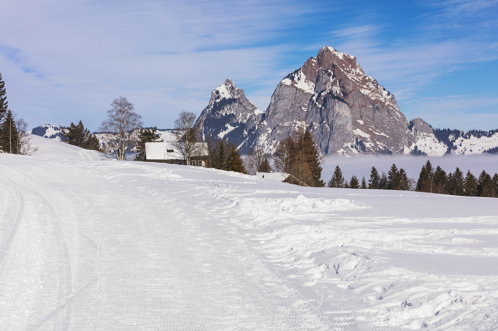

The Into The Woods Hotel is located in a prime area of the famous Bukovel resort in the heart of the Carpathian mountains. This magnificent place is located near the Youth Lake with its famous thermal waters. The Hotel is surrounded by majestic mountains and centennial pines.
The main feature of this place of leisure and fun is the direct proximity to the ski resort slopes. Every adult and child will find entertainment according to personal taste in Into The Woods. The hotel is equipped with the pool, spa zone, sauna.
Everyone willing can play billiards, table tennis, or visit the professional gym. Children will definitely have fun in the safe and bright playground zone. The territory is large enough that every visitor of Into the Woods can feel comfortable and relaxed while staying at the hotel.
The hotel with its panoramic views has 20 guestrooms, the restaurant and the bar.
Also, there are two meeting rooms and several relax zones.
Each room is equipped according to the latest technology and stylistically shaped.
14 versatile meeting rooms and 1,660 square metre Spa, the hotel provides a relaxed atmosphere for leisure visitors and a comfortable business environment for corporate guests.